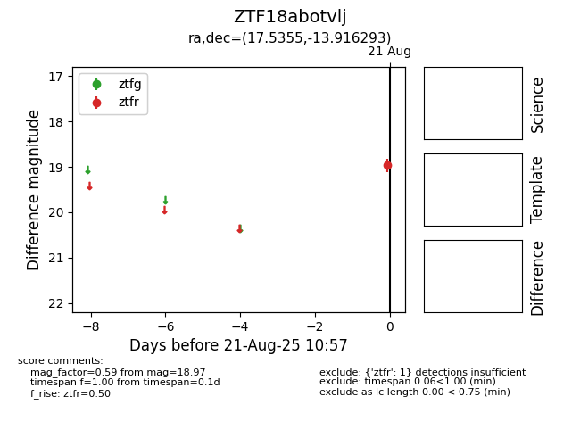

Target ZTF18abotvlj at 2025-08-21 10:57, see:
FINK: fink-portal.org/ZTF18abotvlj
Lasair: lasair-ztf.lsst.ac.uk/objects/ZTF18abotvlj
ALeRCE: alerce.online/object/ZTF18abotvlj
alt names
ZTF18abotvlj (ztf,alerce)
coordinates:
equatorial (ra, dec) = (17.5355,-13.91629)
galactic (l, b) = (142.1432,-76.08557)
photometry
last ztfr=18.97
1 ztfr detections
